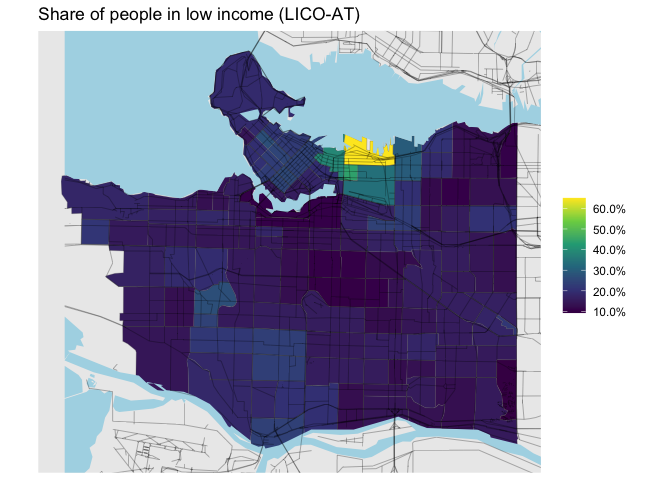

MountainmathHelpers is a collection of helper functions that are frequently used at MountainMath. This package can be used to access these functions, be it for reproducing and running code written by MountianMath or because they happen to be useful for whatever code others are writing.
Installation
You can install the development version from GitHub with:
remotes::install_github("mountainMath/mountainmathHelpers")Vector tile example
It can be cumbersome to add nice background layers in ggplot maps. The rmapzen package provides convenient access to former Mapzen vector tiles, now hosted via NextZen. This package adds several geom_xxx functions to autmoatically fetch relevant vector tile data and add them to a map.
Here is an example how to add water and road vector layers.
library(mountainmathHelpers)
library(cancensus)
library(ggplot2)
data <- get_census("CA16",regions=list(CSD="5915022"),level="CT",geo_format="sf",
vectors=c("lico"="v_CA16_2570"))
ggplot(data) +
geom_sf(aes(fill=lico/100),size=0.1) +
scale_fill_viridis_c(labels=scales::percent) +
geom_water() +
geom_roads() +
coord_bbox(sf::st_bbox(data)) +
labs(title="Share of people in low income (LICO-AT)",fill=NULL,
caption="StatCan Census 2016")